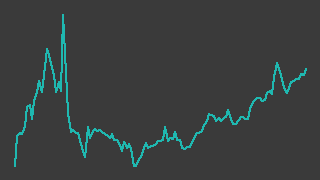

いい生活（3796）
東証スタンダード／レポート更新 2026-09-27
IR情報 ↗株探 ↗IR BANK ↗

画像判定※・6か月・基準日 2026-09-25一行でいうと：不動産賃貸管理・仲介会社向けの業務SaaSを売る会社。前期（26/3期）は営業赤字から黒字に戻り、今期は営業利益+39%の会社計画を置くが、1Qの営業利益は3百万円✓と薄く、利益の大半が期末の4Qに偏る構造。流動性は小さく、株価の採用値は株式分割後の2026年3月末以降しか揃っていない。
週次アップデート最新 2026-W39・全 1 件
新しい週を上に置いている。過去の記述は書き換えず、そのまま残している。
2026-W39（2026-09-21 週）
初回登録の週。祝日で2営業日だけの週に、終値は334円✓→338円✓と小動き。
- 監視を開始（楽天証券スクリーニング「成長株0830（per）」通過。
data/master.yamlの watch_reason） - 今週の営業日は 9/24・9/25 の2日。終値は 9/18 の334円✓から 9/25 の338円✓へ+1.2%。9/24 の出来高は96,000株※と今月の中では多かったが、会社側の開示は今週見当たらず、動いた理由は特定できていない（株探の開示一覧 https://kabutan.jp/stock/news?code=3796&nmode=3 ・2026-09-27取得）
- 初の株主優待（QUOカード）の基準日が 2026-09-30。100株以上が対象（一次: https://kabutan.jp/disclosures/pdf/20260514/140120260514532684/ ・2026-09-27取得）。今週の出来高増は権利取りの買いの可能性があるが、裏付けは無い（解釈）
- 次回の月次概況（8月度）は 2026-09-28 開示予定と会社が告知している（一次: 7月度月次 https://kabutan.jp/disclosures/pdf/20260824/140120260824525083/ ・2026-09-27取得）
次週に見ること：①9/28 の8月度月次でサブスクリプション売上の前年同月比（7月度は+6.6%※）が維持されるか ②優待の権利落ち（9/29）後の値動き
次期売上・利益推定対象 FY2027-03・作成済み・変数 4 個
作成済み 対象期 FY2027-03・起案 2026-09-27。検証済みデータと明示した仮定から機械計算した概算であり、会社計画でも的中予想でもない。推定 の付いた変数を疑うための頁。
会社計画・市場予想・実績との比較（百万円）
| 指標 | 前期実績 | 会社計画 | 市場予想 | 当台帳推定 | 市場予想比 |
|---|---|---|---|---|---|
| 売上 | 3,232 | 3,415 | — | 3,378 | — |
| 営業利益 | 229 | 319 | — | 287 | — |
市場予想: 未確認。みんかぶの証券アナリスト予想ページ（https://minkabu.jp/stock/3796/analyst_consensus、2026-09-27）は取得時 403 で中身を見られなかった。 時価総額が小さく、調べた範囲（株探・株予報の銘柄ページ、2026-09-27）ではアナリスト予想の表を見つけていない。カバーが無いと断定はしていない。 比較対象は会社計画のみ
計算の分解
| セグメント | 式（値を代入） | 売上（百万円） |
|---|---|---|
| サブスクリプション（課金法人数×月額単価×12） | 1,595 × 0.153 × 12 = 2,928.42 | 2,928 |
| ソリューション（導入・開発などスポット） | 450 = 450 | 450 |
変数と根拠
カードを押すと、その値の置き方（メモ・出典）が開く。推定 の変数から疑うこと。
サブスクリプション（課金法人数×月額単価×12）customers1595推定
サブスクリプション（課金法人数×月額単価×12）arpu_monthly0.153推定
ソリューション（導入・開発などスポット）solution450推定
全社op_margin0.085推定
感度 — この推定を最も動かす変数
各変数を +10% したときの営業利益の変化。上にある変数ほど、根拠を厚く確かめる価値がある。ただし op_margin だけは別扱い——営業利益 = 売上合計 × op_margin なので +10% は定義上つねに +10% になり、売上側の変数と大小を比べても意味が無い。
| 変数 | セグメント | 営業利益への影響 |
|---|---|---|
op_margin | 全社 定義上 | +10.0% 乗法モデルなので定義上つねに +10%。売上側の変数との大小比較には意味が無い（率の水準そのものを疑うこと） |
arpu_monthly | サブスクリプション（課金法人数×月額単価×12） | +8.7% |
customers | サブスクリプション（課金法人数×月額単価×12） | +8.7% |
solution | ソリューション（導入・開発などスポット） | +1.3% |
推定の変遷
過去の版は書き換えずに残す。数値感がどう変わってきたかが学習の履歴になる。
| 起案日 | 対象期 | 売上 | 営業利益 | 何を変えたか |
|---|---|---|---|---|
| 2026-09-27 | FY2027-03 | 3,378 | 287 | 初版（Claude 起案・人間未確認）。不動産会社向けクラウド（SaaS）の単一事業で、売上は月額課金のサブスクリプションと、 導入・開発等のソリューション（スポット）の2つに分かれる。サブスク＝課金法人数×月額単価×12、ソリューション＝年額の1区分で置いた。 会社計画は売上 3,415・営業利益 319 百万円（fundamentals の採用値。前期比 +5.7%・+39.3%）。 2026-04-01 付で1株→2株の株式分割があった（ダイヤモンド・ザイ 1Q記事 https://diamond.jp/zai/articles/-/1071234 、 株探 2026-02-25 記事 https://kabutan.jp/stock/news?code=3796&b=n202602250342 、いずれも 2026-09-27 取得の検索結果）。 このモデルは1株指標を使わないので分割の影響は受けない。fundamentals の BPS が2ソースでちょうど2倍食い違う（MISMATCH）のは 片方が遡及修正しているためと考えられる。数値の出典は二次情報（ログミー・ダイヤモンド・ザイ・株探の記事）で、決算短信の本文は未確認 |
会社概要この会社は何者か・財務の推移と健全性・今後の展望とリスク・値動きと市場の評価・出典・検証の記録
この会社は何者か
- 何を売っているか：不動産賃貸管理会社・仲介会社向けの業務クラウド（賃貸管理・売買/賃貸の営業支援・物件広告）と、業者間の物件情報流通基盤「いい生活Square」、入居者・オーナー向けアプリ。開示上は「クラウドソリューション事業」の単一セグメント（一次: 27/3期1Q決算短信）
- 売上の2区分：毎月継続する「サブスクリプション」（SaaS月額・運用支援）と、スポットの「ソリューション」（初期設定・導入支援・受託開発・代理店手数料）。27/3期1Qはサブスクリプションが売上の93%※を占めた
- 伸び方：1Q時点の有料課金法人数は1,584法人※（前年同月1,566法人※）で、社数はほぼ横ばい。平均月額単価は約150千円※（前年同月比+6.5%※）で、伸びは顧客数より単価（アップセル/クロスセル）から来ていると読める。MRR解約率は0.31%※（6月単月、会社定義）
- 最近の打ち手：電子決済等代行業の登録（2026年7月）、三井住友銀行との銀行API接続（2026年9月）、東京ガス・NHK・保証会社との申込情報連携など、管理会社の周辺手続きをつなぐ方向に機能を広げている（出典は「出典」節の一次情報一覧）
- 市場・比較対象：東証スタンダード、決算期は3月。株探は比較銘柄としてシステムソフト・マーキュリー・GMOテックを挙げている（二次）。どこと顧客を奪い合っているかは本稿では確認していない
財務の推移と健全性
凡例は「出典」節の先頭を参照。表の数値はすべて2ソース照合済みの採用値（✓）。
| 期 | 売上高（百万円） | 営業利益（百万円） | 経常利益（百万円） | 純利益（百万円） |
|---|---|---|---|---|
| 23/3期 | 2,696 | 234 | 236 | 158 |
| 24/3期 | 2,808 | 176 | 208 | 146 |
| 25/3期 | 3,028 | -37 | -42 | -39 |
| 26/3期 | 3,232 | 229 | 236 | 151 |
| 27/3期 会社計画 | 3,415 | 319 | 317 | 195 |
出所: data/fundamentals/3796.csv の採用値（別サイト2つ以上が一致した値だけ）。7/7点を採用。
出所: data/fundamentals/3796.csv の採用値（別サイト2つ以上が一致した値だけ）。5/5点を採用。
- 売上は毎年伸びているが、伸び率は一桁台。27/3期計画も+5.7%（会社計画の対前期比）
- 利益は一度崩れて戻った。25/3期は営業赤字-37百万円✓、26/3期は229百万円✓に回復。会社は4月27日に26/3期の営業利益予想を170百万円から229百万円へ上方修正しており、理由を「AIテクノロジー活用等による省力化」の成果としている（一次: 上方修正の開示）
- 四半期で見ると4Qに利益が偏る。26/3期の営業利益は1Q -13百万円✓、2Q 79〜81百万円※（2ソースが不一致）、3Q 38百万円✓、4Q 125百万円✓。4Q（1〜3月）の売上894百万円✓は年間で最も大きく、3月の月次ではソリューション売上が突出している（7月度月次資料の3月欄）。引っ越し繁忙期に導入・スポット案件が集中する季節性と読める
- 27/3期1Q：売上767百万円✓（前年同期749百万円✓、+2.3%）、営業利益3百万円✓（前年同期-13百万円✓）、経常利益10百万円✓。サブスクリプションは+9.4%※だが、前年同期にあった大型導入案件の反動でソリューションが-44.8%※となり、合計の伸びを押し下げた（一次: 1Q決算短信）。売上原価は+5.7%※、販管費は-4.2%※で、費用を抑えて黒字に戻した形
- 1Q進捗率は営業利益で約1%（3百万円✓÷計画319百万円✓）。上の季節性があるため低いこと自体は異常とは言えないが、前年も1Qは赤字だったので前年同期との比較でしか良し悪しを言えない
- 健全性：自己資本比率は26/3期末74.5%✓、1Q末78.2%※。営業CFは24/3期618百万円✓、25/3期316百万円✓、26/3期760百万円✓。有利子負債は長期借入金の返済が続いている程度（1Q短信）。財務面の余裕は大きい
- 1株あたりの数値の注意：2026年4月1日付で1株→2株の分割。1株純資産は株探とIR BANKで分割前後の基準が混在しており、台帳上は不一致（※）。本稿では1株あたりの数値を比較に使わない
今後の展望とリスク
- 会社計画（27/3期）：売上3,415百万円✓、営業利益319百万円✓（+39%）、経常利益317百万円✓、純利益195百万円✓。1Q時点で修正なし（一次: 1Q決算短信）。会社は1Qを「業績予想対比でも順調」としている
- 増益の前提：売上の伸びは一桁台なので、+39%の増益はほぼ費用の抑制（AIによる開発・業務の省力化、外注費・人件費の削減）に依存していると読める（assumed: true。根拠: 上方修正開示と1Q短信が増益要因として費用側を挙げている）
- 長期の目標：決算説明資料では顧客法人数5,000社・平均月額単価100千円を「目標とする指標」として掲げる（一次: 27/3期1Q決算説明資料）。1Q時点の顧客数1,584法人※から見ると距離は大きく、期限も示されていない
- リスク
- ソリューション売上は案件次第で振れる（1Qで-44.8%※）。4Qの集中度が高いため、期末の案件が1つずれると通期計画に効きやすい
- 顧客数の伸びが小さく、成長の源泉が既存顧客の単価上げに寄っている。単価上げが止まると成長率が落ちる
- 費用抑制による増益は、開発・営業投資を抑えている面もあり、持続性は未確認
- 1Qの営業利益は小さく、前年同期比の％で勢いを測れない（
screen.pyは NO_QUARTERLY を付けている。有望とは名指ししない） - 次に見る材料：毎月の月次概況（次回 9/28）、2Q決算（例年11月上旬。日付は未確認）
値動きと市場の評価
出所: data/prices/daily.csv の採用終値（2つの取得元が一致した終値だけ）。ザラ場の高値・安値は照合を通っていないので使っていない。125/125点を採用、26週の採用終値 121営業日、出来事 4/4件を配置。
- 株価の採用終値は 2026-03-30 以降しか無い（270営業日中121日が照合済み）。それ以前は取得元2つの値がほぼ2倍ずれており（例: 254円と508円）、片方が分割調整後・片方が分割前の値と読める。分割前の値動きは本稿では扱わない
- 4月末の急騰：4/24 の319円✓から 4/27 に386円✓（出来高3,558,900株※）。株探は4/27に一時ストップ高の399円まで上げたと報じている（二次）。26/3期予想の上方修正は同日15:30の開示で、場中の急騰の理由は特定できていない。翌4/28は335円✓、4/30は300円✓まで戻した
- 決算への反応：5/14 本決算（優待導入を同時発表）の翌日 5/15 は261円✓→287円✓。8/6 の1Q決算の翌日 8/7 は302円✓→294円✓と小幅安
- 直近：6/11 の253円✓を底に切り上がり、9/4（三井住友銀行との銀行API接続を発表）に344円✓。9/25 は338円✓
- 市場の評価（二次・※）：株探（2026-09-25時点）で時価総額49.2億円※、PER23.9倍※、PBR2.39倍※、配当利回り0.89%※、信用倍率1.88倍※。27/3期の配当予想は分割後1株3円（一次: 1Q短信）
- 流動性：直近20営業日の売買代金は1日平均で約1千万円※（採用終値×出来高※で概算）。小さい
出典
凡例: ✓=2ソース照合済みの採用値 ／ ※=未照合・参考値 ／ †=決算短信（一次情報）から直接
一次情報（いずれも 2026-09-27 取得）
| 資料 | URL |
|---|---|
| 27/3期 1Q 決算短信（2026-08-06） | https://kabutan.jp/disclosures/pdf/20260806/140120260806511563/ |
| 27/3期 1Q 決算説明資料（2026-08-06） | https://kabutan.jp/disclosures/pdf/20260806/140120260806512040/ |
| 26/3期 業績予想の上方修正（2026-04-27） | https://kabutan.jp/disclosures/pdf/20260427/140120260427511141/ |
| 株主優待制度の導入（2026-05-14） | https://kabutan.jp/disclosures/pdf/20260514/140120260514532684/ |
| 2026年7月度 月次概況（2026-08-24） | https://kabutan.jp/disclosures/pdf/20260824/140120260824525083/ |
| 会社IRサイト | https://www.e-seikatsu.info/IR/ |
二次情報（いずれも 2026-09-27 取得）
| 資料 | URL |
|---|---|
| 株探 基本情報（時価総額・PER・PBR・比較銘柄） | https://kabutan.jp/stock/?code=3796 |
| 株探 開示・ニュース一覧 | https://kabutan.jp/stock/news?code=3796&nmode=3 |
| 株探「いい生活が続伸、期中２度目の増額修正を好感し上値追い継続」（2026-04-28） | https://kabutan.jp/stock/news?code=3796&b=n202604280265 |
| 株探「いい生活は朝安後プラス圏浮上、三井住友銀行と銀行ＡＰＩ接続サービスの利用契約締結」（2026-09-04） | https://kabutan.jp/stock/news?code=3796&nmode=3 |
| IR BANK 決算推移 | https://irbank.net/E05551/results |
未確認のまま残していること
- 4/27 場中の急騰の理由（上方修正の開示は引け後）
- 2Q決算の発表予定日
- 主要な競合と、賃貸管理SaaS市場でのシェア
- 顧客法人数5,000社目標の期限
- 分割前（2026-03-27以前）の採用終値
記述の裏取り
本文の記述を、書いたのとは別の文脈が出典URLを取り直して1件ずつ判定した結果（読み方）。
検証日 2026-09-27検証した記述 55裏付けあり 26この出典では確かめられない（別の出典が要る） 28確かめられない（到達不可・出典なし） 1再取得した出典 10
裏が取れなかった記述
出典を取り直しても確かめられなかったもの。本文に残っているが、確認済みとして読んではいけない。
| 判定 | 本文の記述 | 再取得して分かったこと | 出典 | どうするか |
|---|---|---|---|---|
| この出典では確かめられない（別の出典が要る） | 初の株主優待（QUOカード）の基準日が 2026-09-30。100株以上が対象 | 再取得（200）だが本文は145文字で、表題「いい生活【3796】2026年05月14日 開示情報 - 株主優待制度の導入に関するお知らせ」とナビのみ（PDF本体はテキスト化されない）。QUOカード・基準日・100株の文言は取得本文に無い。 | 一次情報 出典 ↗ | 優待の内容・基準日を会社IRの優待ページ等テキストで読める一次情報で出典に足すか、「未確認」を残す |
| この出典では確かめられない（別の出典が要る） | 次回の月次概況（8月度）は 2026-09-28 開示予定と会社が告知している | 再取得（200）だが本文は153文字で、表題「2026年7月度 月次概況（速報）に関するお知らせ」とナビのみ。次回開示予定日の記載は取得本文に無い。 | 一次情報 出典 ↗ | IRカレンダー等テキストの一次情報を足すか、9/28 の開示を待って確かめる |
| この出典では確かめられない（別の出典が要る） | 7月度は+6.6%※ | 再取得（200）だが表題とナビのみ（153文字）。サブスクリプション売上の前年同月比は取得本文に無い。 | 一次情報 出典 ↗ | PDF本文を読める形で確認できるまで※（未確認）のまま |
| この出典では確かめられない（別の出典が要る） | 開示上は「クラウドソリューション事業」の単一セグメント | 再取得（200）だが本文は156文字で、表題「2027年3月期 第1四半期決算短信〔日本基準〕（連結）」とナビのみ。セグメントの記載は取得本文に無い。 | 一次情報 出典 ↗ | テキストで読める一次情報（有報・IRの事業内容ページ等）を出典に足す |
| この出典では確かめられない（別の出典が要る） | 27/3期1Qはサブスクリプションが売上の93%※を占めた | 再取得（200）だが表題とナビのみ。売上区分の内訳は取得本文に無く、data/fundamentals/3796.csv にも売上区分の行は無い。 | 一次情報 出典 ↗ | ※のまま残すか、読める一次情報を足す |
| この出典では確かめられない（別の出典が要る） | 1Q時点の有料課金法人数は1,584法人※（前年同月1,566法人※） | 再取得（200）だが本文は149文字で、表題「2027年3月期 第1四半期 決算説明資料」とナビのみ。法人数は取得本文に無い。 | 一次情報 出典 ↗ | ※のまま残すか、読める一次情報を足す |
| この出典では確かめられない（別の出典が要る） | 平均月額単価は約150千円※（前年同月比+6.5%※） | 再取得（200）だが表題とナビのみ。単価は取得本文に無い。 | 一次情報 出典 ↗ | 本文の展望節は『平均月額単価100千円』を目標として掲げるとしており、現状約150千円と並べると目標が現状より低いことになる。どちらかの読み違い（単位・定義）の可能性があるので説明資料の原本で両方を確かめる |
| この出典では確かめられない（別の出典が要る） | MRR解約率は0.31%※（6月単月、会社定義） | 再取得（200）だが表題とナビのみ。解約率は取得本文に無い。 | 一次情報 出典 ↗ | ※のまま残すか、読める一次情報を足す |
| この出典では確かめられない（別の出典が要る） | 電子決済等代行業の登録（2026年7月） | IRトップ再取得（200）にはナビ項目「電子決済等代行業に係る表示」があるのみで、登録時期の記載は無い。株探開示一覧（200）の1ページ目（26/08/21〜26/09/18）にも該当の開示行は無い。 | 一次情報 出典 ↗ 出典 ↗ | 登録時期を示す一次情報（会社の該当ページ・プレスリリース）のURLを出典に足す |
| この出典では確かめられない（別の出典が要る） | 東京ガス・NHK・保証会社との申込情報連携 | 再取得（200）に「26/08/25 10:00 | 開示 | いい生活、東京ガスと業務委託契約を締結 入居申込情報と連携し、スムーズなライフライン契約手続きを実現」「26/09/07 10:00 | 開示 | いい生活、ドコモのあんしん賃貸保証とシステム連携を開始」はあるが、「NHK」はヒット0件。 | 二次情報 出典 ↗ | NHK との連携の出典を足すか、NHK を落とす |
| この出典では確かめられない（別の出典が要る） | 理由を「AIテクノロジー活用等による省力化」の成果としている | 株探記事（200）の表現は「ＡＩテクノロジーなどを活用した合理化努力が収益採算の改善につながっている」で、鉤括弧で引かれた「AIテクノロジー活用等による省力化」の文言は無い。一次PDF（200）は表題「2026年3月期通期連結業績予想の修正（上方修正）に関するお知らせ」とナビのみ。 | 二次情報 出典 ↗ 出典 ↗ | 会社の文言として鉤括弧で引くなら一次の本文で確かめる。確かめられないなら括弧を外して二次の要旨として書く |
| この出典では確かめられない（別の出典が要る） | 3月の月次ではソリューション売上が突出している | 再取得（200）だが表題とナビのみ。月次の区分別売上は取得本文に無い。 | 一次情報 出典 ↗ | 読める一次情報を足すか「未確認」を残す |
| この出典では確かめられない（別の出典が要る） | 売上767百万円✓（前年同期749百万円✓、+2.3%） | revenue: Q2026-04_2026-06=767（OK）、Q2025-04_2025-06=749（OK）。767/749=1.0240 で採用値どうしの比は +2.4%。百万円未満の端数次第で +2.3% もあり得る（766.5/749.5=1.0227）が、その端数は data に無い。 | 検証済みデータdata/fundamentals/3796.csv | 採用値から出す比率は +2.4% と書くか、短信記載の％であることを出典付きで示す |
| この出典では確かめられない（別の出典が要る） | サブスクリプションは+9.4%※だが、前年同期にあった大型導入案件の反動でソリューションが-44.8%※ | 再取得（200）だが表題とナビのみ。区分別の増減率と理由は取得本文に無い。 | 一次情報 出典 ↗ | ※のまま残すか、読める一次情報を足す |
| この出典では確かめられない（別の出典が要る） | 売上原価は+5.7%※、販管費は-4.2%※ | 再取得（200）だが表題とナビのみ。data/fundamentals の cost_ratio・sga_ratio は irbank_q の SINGLE_SOURCE で採用値ではないため裏付けに使わない。 | 一次情報 出典 ↗ | ※のまま残すか、読める一次情報を足す |
| この出典では確かめられない（別の出典が要る） | 1Q末78.2%※ | equity_ratio(Q2026-04_2026-06) は SINGLE_SOURCE（kabutan_bs=78.2）で採用値が無い。本文の※表示は状態と合っている。 | 検証済みデータdata/fundamentals/3796.csv | ※のまま残す（二つ目の取得元で照合されるまで） |
| この出典では確かめられない（別の出典が要る） | 有利子負債は長期借入金の返済が続いている程度（1Q短信） | 1Q短信（200）は表題とナビのみで借入金の記載は取れない。IR BANK（200）の財務表は「2025/03 | 23.5億 | 18.7億 | 18.7億 | 79.7 | 665百万 | 0 | 0 | 135.67」「2026/03 | 26.7億 | 19.9億 | 19.9億 | 74.5 | 781百万 | 154百万 | 7.75 | 144.13」で、26/3期に有利子負債が0→154百万円に増えている（data の financing_cf(FY2026-03)=120 も OK）。本文の書きぶりはこの増加に触れていない。 | 一次情報 出典 ↗ 出典 ↗ | 26/3期に借入れが発生した事実を併記するか、1Q短信の該当箇所を読める形で確かめる |
| この出典では確かめられない（別の出典が要る） | 2026年4月1日付で1株→2株の分割 | 出典表に分割の開示が無い。daily.csv の 2026-03-27 行は MISMATCH（kabutan=274.0・yahoo_jp=548.0）でちょうど2倍のずれがあり、2026-03-30 以降は OK だが、これは状況証拠で分割日・比率の一次記載ではない。 | 出典なしdata/prices/daily.csv | 株式分割の適時開示のURLを出典に足す |
| この出典では確かめられない（別の出典が要る） | 会社は1Qを「業績予想対比でも順調」としている | 再取得（200）だが表題とナビのみ。会社の評価文言は取得本文に無い。「1Q時点で修正なし」も同じく取得本文では確かめられない（data の FY2027-03 計画値 3415/319/317/195 が現時点の採用値である、までは言える）。 | 一次情報 出典 ↗ | 鉤括弧の引用は一次本文で確かめてから残す |
| この出典では確かめられない（別の出典が要る） | 決算説明資料では顧客法人数5,000社・平均月額単価100千円を「目標とする指標」として掲げる | 再取得（200）だが表題とナビのみ。目標指標の記載は取得本文に無い。 | 一次情報 出典 ↗ | 会社節の『平均月額単価は約150千円』と並べると目標が現状を下回り辻褄が合わない。説明資料原本で目標値と単価の定義を確かめる |
| 確かめられない（到達不可・出典なし） | screen.py は NO_QUARTERLY を付けている | screen.py は data/master.yaml を読んで動くため、隔離規定（master.yaml を開かない）の下では実行していない。実行結果の記録も data/ に無い。 | 出典なし — | 人間側で python src/screen.py 3796 を実行して警告を確かめる |
| この出典では確かめられない（別の出典が要る） | 2Q決算（例年11月上旬。日付は未確認） | 株探基本情報（200）の業績推移は本決算の発表日（25/05/15・26/05/14）のみで、2Q決算の例年の時期は取得本文に無い。本文自身も日付は未確認と明示している。 | 出典なし 出典 ↗ | IRカレンダー等で確かめるまで未確認のまま |
| この出典では確かめられない（別の出典が要る） | 26/3期予想の上方修正は同日15:30の開示 | 記事（200）は「２７日取引終了後に２６年３月期業績予想の修正を発表」で、引け後であることは裏付くが「15:30」の時刻は無い。開示一覧（nmode=3）の再取得1ページ目は 26/08/21 以降のみで4月の行は取れていない。 | 二次情報 出典 ↗ | 時刻を落として「引け後」と書くか、開示時刻の分かる出典を足す |
| この出典では確かめられない（別の出典が要る） | | 株探「いい生活は朝安後プラス圏浮上、三井住友銀行と銀行ＡＰＩ接続サービスの利用契約締結」（2026-09-04） | https://kabutan.jp/stock/news?code=3796&nmode=3 | | 再取得（200）した URL は開示一覧で、「朝安後プラス圏浮上」はヒット0件。同日の行は会社開示「いい生活の不動産業務基幹システムが銀行APIを通じて三井住友銀行の口座情報と直結」のみ。表の見出しとURLが対応していない。 | 二次情報 出典 ↗ | 記事個別のURL（news?code=3796&b=n…）に差し替えるか、行の見出しを開示一覧に直す |
| この出典では確かめられない（別の出典が要る） | | 27/3期 1Q 決算短信（2026-08-06） | https://kabutan.jp/disclosures/pdf/20260806/140120260806511563/ | | 再取得（200、156文字）は表題とナビのみ（PDF本体はテキスト化されない）。一次の欄の出典として本文の記述を支えられない。 | 一次情報 出典 ↗ | data/tanshin/3796.csv が無い。kabu-ledger スキルで短信を取り込めば数値は data 経由で裏付けられる |
| この出典では確かめられない（別の出典が要る） | | 27/3期 1Q 決算説明資料（2026-08-06） | https://kabutan.jp/disclosures/pdf/20260806/140120260806512040/ | | 再取得（200、149文字）は表題とナビのみ。 | 一次情報 出典 ↗ | 会社IRの説明資料ページ等、本文が読める一次情報を足す |
| この出典では確かめられない（別の出典が要る） | | 26/3期 業績予想の上方修正（2026-04-27） | https://kabutan.jp/disclosures/pdf/20260427/140120260427511141/ | | 再取得（200、161文字）は表題とナビのみ。 | 一次情報 出典 ↗ | 本文が読める一次情報を足す |
| この出典では確かめられない（別の出典が要る） | | 株主優待制度の導入（2026-05-14） | https://kabutan.jp/disclosures/pdf/20260514/140120260514532684/ | | 再取得（200、145文字）は表題とナビのみ。 | 一次情報 出典 ↗ | 本文が読める一次情報を足す |
| この出典では確かめられない（別の出典が要る） | | 2026年7月度 月次概況（2026-08-24） | https://kabutan.jp/disclosures/pdf/20260824/140120260824525083/ | | 再取得（200、153文字）は表題とナビのみ。 | 一次情報 出典 ↗ | 本文が読める一次情報を足す |
裏付けが取れた記述 26件
| 判定 | 本文の記述 | 再取得して分かったこと | 出典 | どうするか |
|---|---|---|---|---|
| 裏付けあり | 終値は 9/18 の334円✓から 9/25 の338円✓へ+1.2% | daily.csv 3796 の 2026-09-18 close=334.0・2026-09-25 close=338.0（いずれも status=OK、kabutan/yahoo_jp 一致）。338/334=1.0120 → +1.2%。 | 検証済みデータdata/prices/daily.csv | — |
| 裏付けあり | 9/24 の出来高は96,000株※と今月の中では多かった | daily.csv 3796 の 2026-09-24 行は volume=96000（status=OK）。2026-09-01〜09-25 の各日出来高（最大の次点は 9/04 の75200）の中で最大。 | 検証済みデータdata/prices/daily.csv | — |
| 裏付けあり | 会社側の開示は今週見当たらず | 再取得（200）。開示一覧の最新行は「26/09/18 10:00 | 開示 | 世田谷区のハウジングプラザが「いい生活Square」で賃貸住宅の情報流通を開始」で、9/21以降の日付の行は無い。 | 二次情報 出典 ↗ | — |
| 裏付けあり | 三井住友銀行との銀行API接続（2026年9月） | 再取得（200）に「26/09/04 10:00 | 開示 | いい生活の不動産業務基幹システムが銀行APIを通じて三井住友銀行の口座情報と直結」が存在。 | 二次情報 出典 ↗ | — |
| 裏付けあり | 株探は比較銘柄としてシステムソフト・マーキュリー・GMOテックを挙げている | 再取得（200）に「比較される銘柄 / システムソフ / マーキュリー / ＧＭＯテック」が存在。 | 二次情報 出典 ↗ | — |
| 裏付けあり | | 26/3期 | 3,232 | 229 | 236 | 151 | | FY2026-03 の採用値: revenue=3232・operating_income=229・ordinary_income=236・net_income=151（いずれも status に OK）。23/3〜25/3期の行も FY2023-03〜FY2025-03 の採用値（2696/234/236/158、2808/176/208/146、3028/-37/-42/-39）と一致。 | 検証済みデータdata/fundamentals/3796.csv | — |
| 裏付けあり | | 27/3期 会社計画 | 3,415 | 319 | 317 | 195 | | FY2027-03 の採用値: revenue_plan=3415・operating_income_plan=319・ordinary_income_plan=317・net_income_plan=195（いずれも OK）。 | 検証済みデータdata/fundamentals/3796.csv | — |
| 裏付けあり | 27/3期計画も+5.7% | revenue_plan(FY2027-03)=3415 ÷ revenue(FY2026-03)=3232 = 1.0566 → +5.7%。 | 検証済みデータdata/fundamentals/3796.csv | — |
| 裏付けあり | 会社は4月27日に26/3期の営業利益予想を170百万円から229百万円へ上方修正しており | 再取得（200）の記事本文に「２７日取引終了後に２６年３月期業績予想の修正を発表、営業損益は従来計画の１億７０００万円の黒字から２億２９００万円の黒字に増額した」。一次の上方修正PDF（20260427）は表題のみで本文は取れていない。 | 二次情報 出典 ↗ | — |
| 裏付けあり | 26/3期の営業利益は1Q -13百万円✓、2Q 79〜81百万円※（2ソースが不一致）、3Q 38百万円✓、4Q 125百万円✓ | operating_income: Q2025-04_2025-06=-13（OK）、Q2025-07_2025-09 は MISMATCH（kabutan_q=79・irbank_q=81）、Q2025-10_2025-12=38（OK）、Q2026-01_2026-03=125（OK）。 | 検証済みデータdata/fundamentals/3796.csv | — |
| 裏付けあり | 4Q（1〜3月）の売上894百万円✓は年間で最も大きく | revenue: Q2025-04_2025-06=749・Q2025-07_2025-09=813・Q2025-10_2025-12=776・Q2026-01_2026-03=894（いずれも OK）。894 が最大。 | 検証済みデータdata/fundamentals/3796.csv | — |
| 裏付けあり | 1Q進捗率は営業利益で約1%（3百万円✓÷計画319百万円✓） | operating_income(Q2026-04_2026-06)=3（OK） ÷ operating_income_plan(FY2027-03)=319（OK） = 0.0094 → 約0.9%。 | 検証済みデータdata/fundamentals/3796.csv | — |
| 裏付けあり | 自己資本比率は26/3期末74.5%✓ | equity_ratio(FY2026-03)=74.5（OK。kabutan_bs/irbank_bs 一致）。 | 検証済みデータdata/fundamentals/3796.csv | — |
| 裏付けあり | 営業CFは24/3期618百万円✓、25/3期316百万円✓、26/3期760百万円✓ | operating_cf: FY2024-03=618・FY2025-03=316・FY2026-03=760（いずれも OK）。 | 検証済みデータdata/fundamentals/3796.csv | — |
| 裏付けあり | 1株純資産は株探とIR BANKで分割前後の基準が混在しており、台帳上は不一致（※） | bps は FY2024-03〜FY2026-03 がいずれも MISMATCH（例: FY2026-03 kabutan_bs=288.26・irbank_bs=144.13。288.26/144.13=2.0）。 | 検証済みデータdata/fundamentals/3796.csv | — |
| 裏付けあり | 株価の採用終値は 2026-03-30 以降しか無い（270営業日中121日が照合済み） | daily.csv の code=3796 は270行、status に OK を含む行は121行。OK 行の最初は 2026-03-30、最後は 2026-09-25。 | 検証済みデータdata/prices/daily.csv | — |
| 裏付けあり | 例: 254円と508円 | 例えば 2026-03-11 行は status=MISMATCH・kabutan=254.0・yahoo_jp=508.0（2025-09-29・2025-11-11・2026-02-13・2026-03-02 も同じ組）。 | 検証済みデータdata/prices/daily.csv | — |
| 裏付けあり | 4/24 の319円✓から 4/27 に386円✓（出来高3,558,900株※） | 2026-04-24 close=319.0（OK）、2026-04-27 close=386.0・high=399.0・volume=3558900（OK）。 | 検証済みデータdata/prices/daily.csv | — |
| 裏付けあり | 株探は4/27に一時ストップ高の399円まで上げたと報じている（二次） | 再取得（200）の記事本文に「前日は一時値幅制限上限の８０円高で３９９円まで上値を伸ばす場面があった」（記事日時 2026年04月28日09時06分）。 | 二次情報 出典 ↗ | — |
| 裏付けあり | 翌4/28は335円✓、4/30は300円✓まで戻した | 2026-04-28 close=335.0（OK）、2026-04-30 close=300.0（OK）。 | 検証済みデータdata/prices/daily.csv | — |
| 裏付けあり | 5/15 は261円✓→287円✓ | 2026-05-14 close=261.0（OK）、2026-05-15 close=287.0（OK）。 | 検証済みデータdata/prices/daily.csv | — |
| 裏付けあり | 8/7 は302円✓→294円✓と小幅安 | 2026-08-06 close=302.0（OK）、2026-08-07 close=294.0（OK）。 | 検証済みデータdata/prices/daily.csv | — |
| 裏付けあり | 6/11 の253円✓を底に切り上がり、9/4（三井住友銀行との銀行API接続を発表）に344円✓ | 2026-04-01 以降の OK 行の最小 close は 2026-06-11 の253.0（6/12 も253.0で同値）、6/11〜9/25 に253未満の OK 行は無い。2026-09-04 close=344.0（OK）。開示一覧（200）に「26/09/04 10:00 | 開示 | いい生活の不動産業務基幹システムが銀行APIを通じて三井住友銀行の口座情報と直結」。 | 検証済みデータdata/prices/daily.csv 出典 ↗ | — |
| 裏付けあり | 株探（2026-09-25時点）で時価総額49.2億円※、PER23.9倍※、PBR2.39倍※、配当利回り0.89%※、信用倍率1.88倍※ | 再取得（200、2026-09-27取得・09/25終値338円表示）に「23.9 倍 | 2.39 倍 | 0.89 ％ | 1.88 倍」「時価総額 | 49.2 億円」。信用倍率は 09/18 の「84.3 | 158.6 | 1.88」。取得日時点の値。 | 二次情報 出典 ↗ | — |
| 裏付けあり | 27/3期の配当予想は分割後1株3円 | 再取得（200）の業績推移に「予 2027.03 | 34.1 | 3.2 | 1.9 | 14.1 | 3.0 | 26/05/14」（１株配 3.0円）。本文が一次として挙げる1Q短信は表題のみで取れていないため二次での裏付け。 | 二次情報 出典 ↗ | — |
| 裏付けあり | 直近20営業日の売買代金は1日平均で約1千万円※ | python src/judge.py --indicators-only の 3796: as_of=2026-09-25・avg_turnover_20d=9972345.0（約997万円）。 | 検証済みデータsrc/judge.py | — |
この欄の材料
検証した時刻 2026-09-27T16:53:06+09:00。記録は data/verification/3796.yaml（append-only）。
実際に取り直した出典
- https://www.e-seikatsu.info/IR/ ↗（HTTP 200）
- https://kabutan.jp/stock/?code=3796 ↗（HTTP 200）
- https://irbank.net/E05551/results ↗（HTTP 200）
- https://kabutan.jp/stock/news?code=3796&nmode=3 ↗（HTTP 200）
- https://kabutan.jp/disclosures/pdf/20260514/140120260514532684/ ↗（HTTP 200）
- https://kabutan.jp/disclosures/pdf/20260824/140120260824525083/ ↗（HTTP 200）
- https://kabutan.jp/disclosures/pdf/20260806/140120260806511563/ ↗（HTTP 200）
- https://kabutan.jp/disclosures/pdf/20260806/140120260806512040/ ↗（HTTP 200）
- https://kabutan.jp/disclosures/pdf/20260427/140120260427511141/ ↗（HTTP 200）
- https://kabutan.jp/stock/news?code=3796&b=n202604280265 ↗（HTTP 200）
機械抽出に委ねている出典
毎週コードが表を抜いて突き合わせているもの。人が読み直すより、そちらの記録のほうが強い。
- https://kabutan.jp/stock/finance?code=3796 ↗ →
data/fundamentals/3796.csv
数値の検証状況
2つの取得元で一致した値だけを採用し、欠測は0で埋めない。この銘柄でどこまで確かめられているかの開示（読み方）。
2ソース照合済み 1132ソースが食い違う 91ソースのみ 452決算短信から直接 0株価の採用終値 121/270日
| 図 | 数値の出どころ | 状態 |
|---|---|---|
events_26w | 照合済み検証済みCSVから自動で組み立て | 125/125点すべて採用値 |
op_income_fy | 照合済み検証済みCSVから自動で組み立て | 5/5点すべて採用値 |
revenue_fy | 照合済み検証済みCSVから自動で組み立て | 7/7点すべて採用値 |
2つの取得元が食い違った項目
どちらが正しいか決められないため、どちらの値も採用していない。この項目を本文で断定形で書いてはいけない。
2011/3 1株益、2024/3 1株純資産、2025/3 1株純資産、2026/3 1株純資産、2026/3 ROA、2026/3 ROE、25/4-6 営業利益率、25/7-9 営業利益、25/7-9 営業利益率
この欄の材料
- 財務数値:
data/fundamentals/3796.csv（574行）— 2サイトの表を機械的に抜いて突き合わせた結果 - 決算短信:
data/tanshin/3796.csv（0行・開示日 —）— PDF本文からの抽出 - 株価:
data/prices/daily.csvのclose。始値・高値・安値・出来高は主ソースのみで照合を通っていないため、図には使っていない